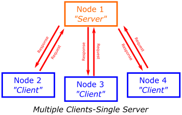

Part 4: ROS 2 Services
Introduction¶
Exercises: X
Estimated Completion Time: Y hours
Aims¶
In this part you will learn about ROS Services, a communication method that facilitates request-response interactions between nodes. You will understand how to use ROS services in combination with standard publisher/subscriber principles to enhance control for specific operations. Additionally, you'll create custom messages and services for tailored communication.
Intended Learning Outcomes¶
By the end of this session you will be able to:
- Recognise how ROS Services differ from the standard topic-based publisher-subscriber approach, and identify appropriate use-cases for this type of messaging system.
- Implement Python node pairs to observe services in action, and understand how they work.
- Invoke different services using a range of service message types.
- Develop Python Service nodes of your own to perform specific robotic tasks.
- Harness Services, in combination with LiDAR data, to implement a basic obstacle avoidance behaviour
- Develop custom ROS messages and services (still need to think about the task for this)
- Demonstrate your understanding of ROS2 so far by developing a Python node which incorporates elements from this and previous parts of this course.
Quick Links¶
Additional Resources¶
Prerequisites¶
Before we begin, ensure that you have the following:
- ROS2 Humble installed on your system
- Cloned the tuos package from github
- Basic understanding of ROS2 concepts like nodes and topics
Getting Started¶
Step 1: Launch your ROS Environment
If you haven't done so already, launch your ROS environment now:
Step 2: Restore your work (todo)
Step 3: Launch VS Code (todo)
Step 4: Make Sure The Course Repo is Up-To-Date
Once again, it's worth quickly checking that the Course Repo is up-to-date before you start on the Part 4 exercises. Go back to Part 1 if you haven't installed it yet (really?!). For the rest of us, see here for how to update.
Step 5: Launch the Robot Simulation
In TERMINAL 1 enter the following command to launch a simulation of a TurtleBot3 Waffle in an empty world:
TERMINAL 1:
...and then wait for the Gazebo window to open:have to add an image here
An Introduction to Services¶
So far, we've learnt about ROS topics and messages, and how individual nodes can access data on a robot by simply subscribing to topics that are being published by any other node on the system. In addition to this, we also learnt how any node can publish messages to any topic: this essentially broadcasts the data contained in the message across the ROS Network, making it available to any other node on the network that may wish to access it.
Another way to pass data between ROS Nodes is by using Services. These are different to messages in that "Service calls" (that is, the process of requesting a service) occur only between one node and another:
- One node (a Service Client) sends a Request to another node.
- Another node (a Service Server) processes that request, performs an action and then sends back a Response.

Services are Synchronous (or sequential): When a ROS node sends a request to a service (as a Service Client) it can't do anything else until the service has been completed and the Service Server has sent a response back. This can be useful for a few reasons:
-
Discrete, short-duration actions: A robot might need to do something before it can move on to something else, e.g.:
- A robot needs to see something before it can move towards it.
- High definition cameras generate large amounts of data and consume battery power, so you may wish to turn a camera on for a specific amount of time (e.g. until an image has been captured) and then turn it off again.
-
Computations: Remember that ROS is network-based, so you might want to offload some computations to a remote computer or a different device on a robot, e.g.:
- A client might send some data and then wait for another process (the server) to process it and send back the result.
It's also worth noting that any number of ROS Client nodes can call a service, but you can only have a single Server providing that particular service at any one time.

Question
Can you think of any other scenarios where this type of communication protocol might be useful?
Exercise 1: Creating a Service Server in Python and calling it from the command-line¶
To start with, let's set up a service and learn how to make a call to it from the command-line to give you an idea of how this all works and why it might be useful.
-
First open up a new terminal instance (TERMINAL 2) and source your ROS2 environment as you did in part 1.
-
Now navigate into the
ros2_ws/srcdirectory created in part 1 and create thepart4_servicespackage. Definepythonas a build type andrclpy,geometry_msgsandtuos_msgsas dependencies.
TERMINAL 2:
Your terminal will return a message verifying the creation of your package.
The
--dependenciesargument adds the necessary dependency lines to thepackage.xmlfileInfo
rclpyis the Python library that provides the core functionality for interacting with ROS 2. It's the Python counterpart to the C++ client library,rclcpp. -
Then navigate into the
ros2_ws/src/part4_services/part4_servicesand create an empty file calledmove_server.pyusingtouchcommand. -
Then, open the file in VS Code, copy and paste this code and then save it. (todo: need to add the template)
Note
It's really important that you understand how the code above works, so that you know how to build your own service Servers in Python.
-
Updating the package.xml file (todo)
-
Next, open the setup.py file in your package directory and add an entry point for the
move_servernode:
Build and run:
-
It's a good practice to run
rosdepin the root of your workspace (ros2_ws) to check for missing dependencies before building: -
Finally, use Colcon to build your new package and its contents
-
Now, we are ready to run the node. Use
ros2 runand observe what is displayed on the terminal -
Then open another terminal window (TERMINAL 3) and source the setup files from inside the root directory again.
-
While the node is running, use
ros2 servicecommand to view all the currently active services on the system:
TERMINAL 3:
You should be able to see the service (todo)
Exercise 2: Creating a Python Service Client Node¶
As well as calling a service from the command-line we can also build Python nodes to do the same thing (i.e. we can build Python Service Client Nodes). In this exercise you will learn how this is done.
-
TERMINAL 3 should be idle, so from here navigate to the
part4_service/folder within thepart4_servicespackage that we created earlier:
TERMINAL 3:
- Create a new file called
move_client.py - Now as you did in the previous exercise, open the VS Code, copy and paste this code and then save it. (todo: need to add the template)
Note
Once again, be sure to read the code and understand how this Python Service Client Node works too!
- Create a new file called
-
Next, open the setup.py file (in VS Code) in your package directory and add another entry point for the
move_clientunder the line where you addedmove_serverpreviously: -
Return to TERMINAL 3 and launch the node using
ros2 run:
TODO : ROS2 service call and creating a custom .msg and .srv
Understanding key features todo: ros2 service type ros2 service find ros2 interface show ros2 service call
Exercise 3: Learn to create custom messages and service¶
Exercise 4: Creating your own Service¶
In this exercise you will create your own service Server to make the Waffle perform a specific movement for a given amount of time and then stop.